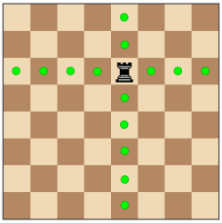

The pawn is the weakest piece on the board. It can only move 1 square at a time or 2 squares on its first move. It can attack and take a piece by moving up diagonally one square but it cannot move backwards. If you are able to get a pawn to the other side of the chess board you will be able to convert the pawn into a bishop, knight, rook or queen. This will help you take advantage of the game.

The Bishops are the pieces that sits beside the King and the Queen which means they are placed on different colour squares. The bishop moves diagonally as far as you want them to go and can capture a piece by moving diagonaly into it.

The knight is a very unusual piece, It moves in a L shape and if there are any peices in the knights path, no problem! The knight can 'jump' over any peices in the L shape. It can capture a piece if it is sitting at the end of the knights path.
The rook moves in two ways. Left or right and up or down as far as you want. It can capture by moving towards the piece it the directions they are allowed to move in.
The queen is the most powerful piece on the board because it can move diagonally, right and left, up and down as far as you want. It is able to capture pieces from long distances so it is good to have more queens in a game.
The king is the most important piece in the game however it can only move 1 square (in any direction) at a time.
Return Home